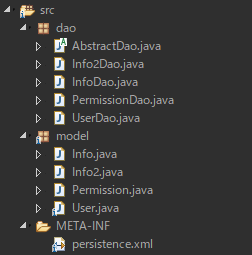
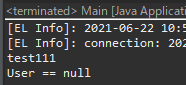
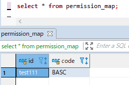

[Java] 50. JPAプロジェクトでDAOクラスを作成する方法
こんにちは。明月です。
この投稿はJPAプロジェクトでDAOクラスを作成する方法に関する説明です。
以前の投稿までJPAフレームワークを使い方に関して説明しました。今回はJPAを実務のプロジェクトにどのように使うかに関する内容です。
JPAフレームワークにtransaction共通関数を作成してそのままにウェブプロジェクト(ServletやSpringフレームワーク)のControllerに使っても問題はありません。
例えば、Controllerの要請がある時、当該なデータをデータベースから取得してそのデータをEntityクラスに格納してクライアント(ブラウザ)に応答しても構いないと意味です。
でも、実務のウェブプロジェクトを作成する時に少しルールがあります。
まず、ウェブ要請がある時に当該な要請で使うデータベースのデータは一括で取得します。その後、セッションに格納するデータや取得するデータを取得して最大に簡潔なロジックを実装して応答します。
なぜ、こんなルールがあるかというとウェブというのはControllerで処理が多くなれば応答速度が遅くなります。使用者の特性上、ページを要請したのに1秒以上がかかっても何か問題があるではないかと認知するので処理速度が遅くなるとダメです。
その理由で一番時間がかかる処理(Database connection)を一番先に配置して、その後で処理ロジックを実装することです。そうすると後にデバッグやプロファイリングする時の性能チェックが簡単になります。
そのことでデータベースからデータを取得してControllerから使うデータに変換する作業がDAO(Database access object)クラスを作成することです。
ウェブからは二つのデータ変換オブジェクトがあります。それがDTOとDAOです。DTOはクライアント(ブラウザ)から要請するデータ値をクラスインスタンスタイプに変換することで、この部分はSpringで自動に処理します。
link - [Java] 40. Web Spring frameworkでControllerを扱う方法
DAOはデータベースのデータをクラスインスタンス値に変換する作業です。それも一部JPAフレームワーク側で処理します。でも、データを様々にJoinするか複雑に取得する場合があるため、DAOクラスを作成します。
package dao;
import javax.persistence.EntityManager;
import javax.persistence.EntityManagerFactory;
import javax.persistence.EntityTransaction;
import javax.persistence.Persistence;
// Dao抽象クラス
public abstract class AbstractDao<T> {
// FactoryManagerを生成する。"JpaExample"はpersistence.xmlに書いている名だ。
private static EntityManagerFactory emf = Persistence.createEntityManagerFactory("JpaExample");
private Class<T> clazz;
// ラムダ式のためのinterface
protected interface EntityManagerRunable {
void run(EntityManager em);
}
// ラムダ式のためのinterface
protected interface EntityManagerCallable<V> {
V run(EntityManager em);
}
// コンストラクタをprotectedに設定
protected AbstractDao(Class<T> clazz) {
this.clazz = clazz;
}
// クラスタイプを取得する関数
protected final Class<T> getClazz() {
return clazz;
}
// テーブルからkeyの条件でデータを取得する。
public T findOne(Object id) {
return transaction((em) -> {
return em.find(clazz, id);
});
}
// EntityをデータベースにInsertする。
public T create(T entity) {
return transaction((em) -> {
em.persist(entity);
return entity;
});
}
// EntityをデータベースにUpdateする。
public T update(T entity) {
return transaction((em) -> {
// クラスをデータベースのデータとマッピングする。
em.detach(entity);
// update
return em.merge(entity);
});
}
// EntityをデータベースにDeleteする。
public void delete(T entity) {
transaction((em) -> {
// クラスをデータベースのデータとマッピングする。
em.detach(entity);
// データをupdateして削除する。
em.remove(em.merge(entity));
});
}
// リターン値があるトランザクション(一般トランザクションでデータを更新可能)
public <V> V transaction(EntityManagerCallable<V> callable) {
return transaction(callable, false);
}
// リターン値があるトランザクション(readonlyをtrueに設定すれば関数を呼び出す間にcommitを実行しません。)
public <V> V transaction(EntityManagerCallable<V> callable, boolean readonly) {
// Managerを生成
EntityManager em = emf.createEntityManager();
// transactionを取得
EntityTransaction transaction = em.getTransaction();
// トランザクション開始
transaction.begin();
try {
// ラムダ式を実行する。
V ret = callable.run(em);
// readonlyがtrueならrollbackする。
if (readonly) {
transaction.rollback();
} else {
// トランザクションをデータベースに格納
transaction.commit();
}
// 結果をリターンする。
return ret;
// エラーが発生する場合。
} catch (Throwable e) {
// transactionが活性中なら
if (transaction.isActive()) {
// rollback
transaction.rollback();
}
// RuntimeExceptionに変換
throw new RuntimeException(e);
} finally {
// Managerを閉める。
em.close();
}
}
// リターン値がないtransaction(一般トランザクションでデータを更新可能)
public void transaction(EntityManagerRunable runnable) {
transaction(runnable, false);
}
// リターン値がないtransaction(readonlyをtrueに設定すれば関数を呼び出す間にcommitを実行しません。)
public void transaction(EntityManagerRunable runnable, boolean readonly) {
// Managerを生成
EntityManager em = emf.createEntityManager();
// transactionを取得
EntityTransaction transaction = em.getTransaction();
// トランザクション開始
transaction.begin();
try {
// ラムダ式を実行する。
runnable.run(em);
// readonlyがtrueならrollbackする。
if (readonly) {
transaction.rollback();
} else {
// トランザクションをデータベースに格納
transaction.commit();
}
// エラーが発生する場合。
} catch (Throwable e) {
// transactionが活性中なら
if (transaction.isActive()) {
// rollback
transaction.rollback();
}
// RuntimeExceptionに変換
throw new RuntimeException(e);
} finally {
// Managerを閉める。
em.close();
}
}
}
まず、DAOクラスを作成するために共通的に使っている抽象クラスを作成しました。
この抽象クラスにはDAOでデータベースからデータを取得するためによく使うtransactionの共通関数を作成しました。このtransactionの共通関数に関しては以前の投稿で説明しました。
link - [Java] 49. JPAでトランザクション(transaction)を扱う方法と共通関数作成する方法(Observerパターン)
そしてControllerなどでよく使っているデータ挿入(create)、修正(update)、削除(delete)関数を共通で作成しました。
コンストラクタはprotectedで設定して継承するクラスで再定義するように作成して、クラスにジェネリックタイプを入れて関数のリターン値とパラメータのデータタイプを一致しました。
UserDaoクラスとInfoDaoクラス、Info2Daoクラス、PermissionDaoクラスを作りましょう。
package dao;
import java.util.List;
import javax.persistence.NoResultException;
import javax.persistence.Query;
import model.User;
// UserデータのDaoクラス、AbstractDaoを継承してジェネリックタイプはUserクラスを設定する。
public class UserDao extends AbstractDao<User> {
// コンストラクタの再定義、protectedからpublicに変更してパラメータを再設定する。
public UserDao() {
// protectedコンストラクタを呼び出す。
super(User.class);
}
// すべてのデータ取得
@SuppressWarnings("unchecked")
public List<User> selectAll() {
// AbstractDao抽象クラスのtransaction関数を使う。
return super.transaction((em) -> {
// クエリを作成する。(実務ではcreateQueryではなく、createNamedQueryを使ってEntityでクエリを管理する。)
Query query = em.createQuery("SELECT u FROM User u");
// 結果リターン
return (List<User>) query.getResultList();
});
}
// Idによるデータを取得
public User selectById(String id) {
// AbstractDao抽象クラスのtransaction関数を使う。
return super.transaction((em) -> {
// クエリを作成する。(実務ではcreateQueryではなく、createNamedQueryを使ってEntityでクエリを管理する。)
Query query = em.createQuery("select u from User u where u.id = :id");
// パラメータ設定
query.setParameter("id", id);
try {
// 結果リターン
return (User) query.getSingleResult();
} catch (NoResultException e) {
// データがなしでエラーが発生するとnullでリターン
return null;
}
});
}
}
上の例はUserDaoクラスです。つまり、データベースからUserデータを取得してUserクラスに変換する形のクラスです。
まず、extendsでAbstractDaoを継承する時、ジェネリックタイプをUserクラスに設定します。そのことでcreate関数とupdate関数、delete関数のパラメータとリターンタイプがUserクラスに一致されます。
コンストラクタは抽象クラスがprotectedタイプなのでpublicに変更して抽象クラスのコンストラクタを呼び出します。

それなら上のデザインみたいな構造に実装されます。
main関数で使いましょう。
import dao.UserDao;
import model.User;
public class Main {
// 実行関数
public static void main(String... args) {
// User Daoインスタンス生成
UserDao userdao = new UserDao();
// Userインスタンス生成
User user = new User();
// データ入力
user.setId("test111");
user.setName("test111");
user.setIsDeleted(false);
// データを挿入
userdao.create(user);
// user変数をnullにする。
user = null;
// データベースからデータを取得する。
user = userdao.selectById("test111");
// コンソール出力
System.out.println(user.getName());
// データを削除する。
userdao.delete(user);
// また、検索する。
user = userdao.selectById("test111");
// nullなら
if(user == null) {
// コンソール出力
System.out.println("User == null");
}
}
}

実行関数でUserDaoクラスのインスタンスを生成してまずデータベースにデータを追加するUserインスタンスを生成しました。
そしてデータをinsertしてselecteで取得しました。最後に削除するところまで問題がありません。
上のDAOはTransactionテーブルを処理するの形です。TransactionテーブルとはTransactionの処理を頻繁にするテーブルという意味です。つまり、データの追加、修正、削除が良く発生するテーブルです。
MasterテーブルのDAO構造は少し違います。Masterテーブルは普通SA(System admin)が直接にデータベースに追加、修正、削除をするのでその頻度が少ないです。
package dao;
import java.util.List;
import javax.persistence.Query;
import model.Permission;
// PermissionデータのDaoクラス、AbstractDaoを継承してジェネリックタイプはPermissionクラスを設定する。
public class PermissionDao extends AbstractDao<Permission> {
// マスタデータ
private static List<Permission> singleton = null;
// コンストラクタの再定義、protectedからpublicに変更してパラメータを再設定する。
public PermissionDao() {
// protectedコンストラクタを呼び出す。
super(Permission.class);
// singletonの変数にデータがなければ設定する。
if(singleton == null) {
reflesh();
}
}
// リスト再更新
@SuppressWarnings("unchecked")
public void reflesh() {
// AbstractDao抽象クラスのtransaction関数を使う。
super.transaction((em) -> {
// クエリを作成
Query query = em.createNamedQuery("Permission.findAll");
// 結果をリストに格納
singleton = (List<Permission>) query.getResultList();
});
}
// Basic権限のマスタデータを取得する。
public Permission BasicPermission() {
// 取得
return singleton.stream().filter(x -> "BASC".equals(x.getCode())).findAny().get();
}
}
Masterデータはデータ変更がすくないので使うたびにconnectionでデータを取得することより上みたいに始めに一回だけ取得してメモリに割り当てして使う方法が性能上で利点があります。
import java.util.ArrayList;
import java.util.List;
import dao.PermissionDao;
import dao.UserDao;
import model.Permission;
import model.User;
public class Main {
// 実行関数
public static void main(String... args) {
// UserDaoインスタンス生成
UserDao userdao = new UserDao();
// PermissionDaoインスタンス生成
PermissionDao permissiondao = new PermissionDao();
// Userインスタンス生成
User user = new User();
// データ入力
user.setId("test111");
user.setName("test111");
user.setIsDeleted(false);
// Permissionリスト生成
List<Permission> permissions = new ArrayList<>();
// basicパーミッション
permissions.add(permissiondao.BasicPermission());
// 設定
user.setPermissions(permissions);
// データ挿入
userdao.create(user);
}
}

上みたいにpermissiondao.BasicPermission()を通って簡単にpermissionインスタンスを取得して使えます。
もし、SAによりデータの変更がある場合、daoのreflesh関数を呼び出したらプログラム上でMasterテーブルデータが再設定します。
でも、実はMasterテーブルデータが変更するならプログラムの内容も修正する可能性が高いので普通は再起動するじゃないかと思います。
ここまでJPAプロジェクトでDAOクラスを作成する方法に関する説明でした。
ご不明なところや間違いところがあればコメントしてください。
- [Java] 56. Web serviceのサーブレット(Servlet)で初期化作業(properties設定)2021/07/02 17:10:36
- [Java] 55. Spring frameworkに文字化けを解決する方法(Encoding設定)2021/06/30 16:37:16
- [Java] 54. Spring frameworkでWeb filterを使う方法2021/06/29 18:25:12
- [Java] 53. ウェブサービス(Web service)でエラーページを処理する方法2021/06/25 13:35:54
- [Java] 52. SpringフレームワークでDAOをFactory method Patternを利用して依存性注入する方法2019/10/17 07:15:48
- [Java] 51. SpringフレームワークでJPAを使い方(依存性注入@Autowired)2019/10/16 07:32:55
- [Java] 50. JPAプロジェクトでDAOクラスを作成する方法2019/10/15 20:12:35
- [Java] 49. JPAでトランザクション(transaction)を扱う方法と共通関数作成する方法(Observerパターン)2019/10/14 20:13:44
- [Java] 48. JPAでQueryを使う方法(JPQLクエリを作成する方法)2019/10/13 22:55:52
- [Java] 47. JPAのEntityクラスのリファレンス設定(cascade, fetch)2019/10/13 00:40:08
- [Java] 46. JPAのEntityクラスの基本設定(@GeneratedValue、 @ManyToMany)2019/10/11 07:30:14
- [Java] 45. JPAを設定する方法2019/10/10 07:29:43
- [Java] 44. Web Spring frameworkのviewで使うプログラム言語(JSTL) - XML2019/10/09 07:34:08
- [Java] 43. Web Spring frameworkのviewで使うプログラム言語(JSTL) - 関数、データベース2019/10/08 07:43:33
- [Design pattern] 3-3. コマンドパターン(Command pattern)2021/11/05 17:01:42
- [Window] apache-tomcatでロードバランシング(Load balancing)する方法とセッションクラスタリング（セッション共有）2021/11/05 16:58:45
- [Window] Apacheでmod_jkとmod_proxyの差異、apacheでtomcatのwebsocketのプロキシフォーワードする方法2021/11/05 16:55:05
- [PHP] Apache環境の同じホスト中でPHPとJava(Servlet)を同時に起動、運用する方法2021/11/05 16:52:04
- [C#] 61. ウィンドウフォーム(Window form)でスレッド(Thread)を使い方、クロススレッド問題解決2021/11/04 19:29:51
- [Design pattern] 3-2. 責任の連鎖パターン(Chain of responsibility pattern)2021/11/04 19:27:58
- [Design pattern] 3-1. ストラテジーパターン(Strategy pattern)2021/11/03 18:38:52
- [C#] 60. ウィンドウフォーム(Window form)のイベント設定する方法2021/11/02 21:18:08
- [Design pattern] 2-7. ファサードパターン(Facade pattern)2021/11/02 19:32:31
- [Design pattern] 2-6. プロキシパターン(Proxy pattern)2021/11/01 19:42:44
- [Design pattern] 2-5. フライウェイトパターン(Flyweight pattern)2021/10/29 19:48:27
- [C#] 59. ウィンドウフォーム(Window form)にコントロール(Control)を使い方法2021/10/29 19:45:43
- [Design pattern] 2-4. デコレーターパターン(Decorator pattern)2021/10/28 20:11:13
- [C#] 58. ウィンドウフォーム(Window form)を作成する方法、そしてウィンドウメッセージとキュー2021/10/27 20:35:44
- [Design pattern] 2-3. ブリッジパターン(Bridge pattern)2021/10/27 20:32:21